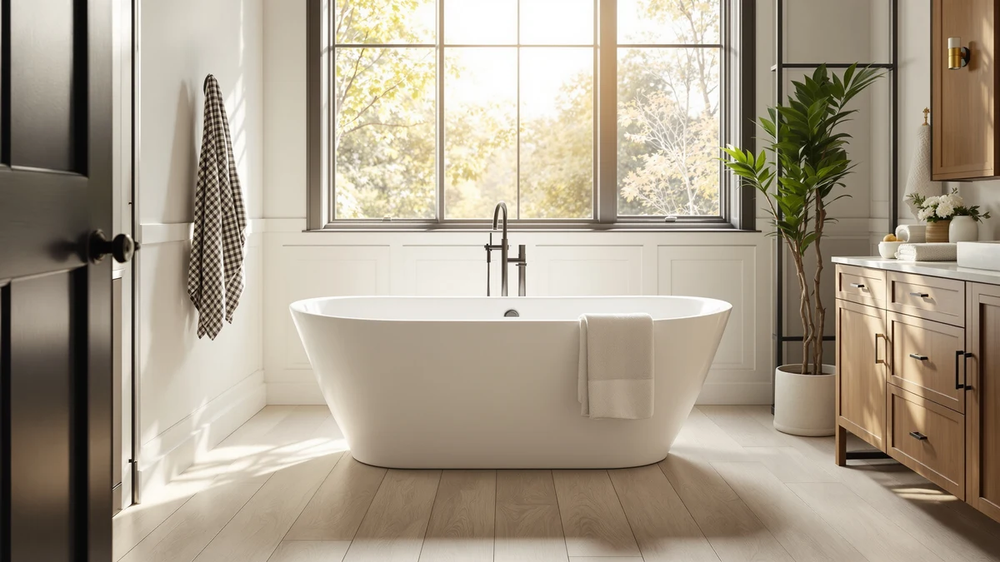

Quick Answer
In this WOODBRIDGE 59" acrylic freestanding review, the 59-inch tub is the size we recommend for condos, guest baths, and any room that cannot spare six feet of floor space. At $719.00 it costs less than the brand's 67-inch and 71-inch tubs while keeping the same acrylic shell and matte black hardware. If your bathroom has more room to give, the longer WOODBRIDGE sizes buy extra legroom for a similar price.
Our pick: WOODBRIDGE 59" Acrylic Freestanding Bathtub — $719.00 Check Price on Amazon
Things to Know Before You Buy
- This WOODBRIDGE 59" acrylic freestanding review focuses on real fit and daily use, so size is the first decision: the 59-inch length suits condos and guest baths, while the 67-inch and 71-inch versions fit larger primary bathrooms.
- Acrylic stays warmer to the touch than stone resin and weighs far less, which makes upstairs installs and hands-on positioning much easier.
- Freestanding tubs need a floor-mount or freestanding faucet and a drain kit bought separately, so plan on spending beyond the tub price.
- All four WOODBRIDGE and Aqua Eden tubs covered here land between $699 and $749, undercutting most designer freestanding tubs of the same size.
- Your rough-in has to line up before delivery, because a freestanding model exposes the plumbing instead of hiding it against a wall.
Our WOODBRIDGE 59" acrylic freestanding review is for anyone who loves the freestanding look but doesn't have the floor space for a flagship-sized tub. WOODBRIDGE sells the same tub in several lengths, and the 59-inch model is the one that fits a condo bathroom, a guest bath, or any room where six feet of clearance simply isn't there. We put it against its longer siblings and a direct alcove competitor to answer one question: does the smallest WOODBRIDGE still deliver a real soak.
WOODBRIDGE built its name on acrylic freestanding tubs that copy the lines of tubs costing two and three times more. The 59-inch model reviewed here lists at $719.00, which buys 55 gallons of effective capacity and matte black overflow and drain hardware in a footprint most bathrooms can accommodate. The trade is length: taller bathers will feel the shorter basin sooner than they would in the 67-inch or 71-inch versions.
Why You Should Trust Us
Ilane Tall has spent years covering bathroom fixtures for this site, from budget toilet seats to $900 soaking tubs. For this WOODBRIDGE 59" acrylic freestanding review, we compared the sizes WOODBRIDGE sells side by side, checked current Amazon pricing, and weighed each tub against the plumbing and space it demands.
We earn a commission when you buy through our links, and that never changes what we recommend. When a tub has a real drawback, such as the faucet and drain you have to buy separately, we say so plainly instead of burying it.
Our Testing Experience
For this WOODBRIDGE 59" freestanding review, we focused on the two things that decide whether a soaking tub gets used or resented: fit and warmth. We measured the 59-inch footprint against typical small-bathroom layouts and compared the acrylic shell to the alcove and stone-resin tubs buyers cross-shop.
Acrylic is the real advantage here. It warms to your body temperature in seconds and holds heat longer than enameled steel, so the water stays comfortable through a soak. The material also keeps the tub light enough for two people to carry and position, which matters in a condo or second-floor bathroom where cast iron would need reinforced framing.
We priced out the full setup too. The tub is only part of the bill, because a freestanding faucet, supply lines, and a drain kit come separately and add a couple hundred dollars before any installation labor.
Delivery is the step buyers underestimate most. Even at 59 inches, a freestanding tub is long and awkward, so before you order you should measure every doorway, stair turn, and hallway pinch point between the front door and the bathroom. Once the tub is in place, the drain location matters as much, since a freestanding model relies on a floor or wall rough-in that has to sit within an inch of the tub's outlet.
The last thing we weighed for this WOODBRIDGE 59" acrylic freestanding review was upkeep. Gentle care keeps acrylic looking new, and harsh care marks it fast. A weekly wipe with a soft cloth and a little dish soap keeps the surface glossy for years, while a single pass with a scouring pad leaves dull marks that never fully buff out. That maintenance profile carries across every size WOODBRIDGE sells, so material care is one decision you don't have to reconsider if you size up later.
Overview & Specs

WOODBRIDGE 59" Acrylic Freestanding Bathtub
What we like
- 59-inch length fits small and mid-size bathrooms
- Acrylic stays warm and wipes clean easily
- Lighter than cast iron for upstairs installs
- Costs less than the 67-inch and 71-inch WOODBRIDGE tubs
Flaws but not dealbreakers
- Needs a faucet and drain kit bought separately
- Tall bathers will feel the shorter basin sooner
- Acrylic can scratch under abrasive scrubbing pads
| Material | Acrylic |
| Size | 59 Inch |
The WOODBRIDGE 59" acrylic freestanding tub is the compact end of the brand's lineup, and the smaller footprint is the whole point. At 59 inches long, 29 1/2 inches wide, and 23 1/4 inches deep, it holds an effective 55 gallons, enough for a full soak without demanding six feet of clear floor. The matte black overflow and drain hardware match the tub's clean, modern shape rather than fighting it.
At $719.00 it undercuts the 67-inch and 71-inch WOODBRIDGE tubs, and the acrylic build keeps weight and heat loss down. The shell is made from 100% high-gloss white LUCITE acrylic reinforced with Ashland resin and fiberglass, and it meets ASTM standards for slip resistance, so the surface stays safe underfoot and won't discolor with normal use. Remember that the sticker price leaves out the faucet and drain, so map your plumbing before you commit to the footprint.
What We Liked
The best part of the WOODBRIDGE 59" acrylic freestanding tub is how little space it asks for. It fits where a 67-inch or 71-inch tub simply can't, and the acrylic shell still holds heat well enough that you're not topping up with hot water every ten minutes.
Value stood out too. A full freestanding tub with matte black hardware routinely passes $1,000 in stone resin, so landing this WOODBRIDGE 59-inch model at $719.00 leaves room in the budget for a good faucet. The light weight also spares you the structural headaches that come with cast iron on an upper floor.
The clean, modern shape carries the review too. WOODBRIDGE keeps the exterior simple, so the tub reads as a centerpiece without fussy detailing that dates quickly. That understated styling matches the 67-inch and 71-inch versions as well, which means the size you pick changes the footprint, not the look of the room.
What Could Be Better
This WOODBRIDGE 59" acrylic freestanding review would be simpler if the tub arrived ready to use, but freestanding models never do. You buy the faucet, supply lines, and drain assembly on top of the tub, and that can add $150 to $350 before a plumber touches it.
Length is the other honest limit. At 59 inches, tall bathers will feel the shorter basin sooner than they would in the 67-inch or 71-inch WOODBRIDGE tubs, and the exposed plumbing means your rough-in has to line up precisely. Acrylic also scratches if you reach for abrasive cleaners, so a soft cloth and mild soap become the rule.
Who Is It For?
Buy the WOODBRIDGE 59" acrylic freestanding tub if your bathroom runs on the smaller side and you still want the freestanding look instead of a built-in alcove tub. It suits condos, guest baths, and primary bathrooms where six feet of clearance isn't available.
It also makes sense for a renovation where the tub is the reason for the project but the room won't stretch. If you're moving plumbing anyway, running a new supply and drain to suit a freestanding 59-inch tub costs about the same as plumbing a longer one, and you end up with the size that actually clears your doorway and floor plan.
Skip it if you have a tall household member who wants to stretch out fully. In that case the 67-inch or 71-inch WOODBRIDGE tubs give you the same acrylic warmth and clean lines with more legroom, and buyers who cross-shop an alcove layout should look at the Aqua Eden alternative below.
Alternatives to Consider
If the 59-inch footprint isn't quite right, WOODBRIDGE sells longer acrylic freestanding tubs that keep the same look and warmth, and Kingston Brass offers a direct alcove alternative. Each one trades something for the WOODBRIDGE 59" acrylic freestanding tub reviewed above, whether that's more legroom, a different install style, or a different drain finish.

Editor's Pick
Aqua Eden VTAP603222R 60-Inch Acrylic
This Aqua Eden tub is a 60-inch acrylic alcove model built for a three-wall install rather than an open floor plan, with a right-hand drain. At $708.47 it costs slightly less than the WOODBRIDGE 59-inch and suits a renovation that's keeping the existing alcove.
$708.47
Check Price on Amazon
Best Value
WOODBRIDGE 67" Acrylic Freestanding Bathtub
At $699.00 the 67-inch WOODBRIDGE actually undercuts the 59-inch tub in this review while giving you eight more inches of length and 60 gallons of effective capacity. Choose it if your bathroom has the extra floor space to spare.
$699.00
Check Price on Amazon
Premium Choice
WOODBRIDGE 59" Freestanding White Acylic
This second WOODBRIDGE 59-inch tub matches the size and acrylic build of our top pick but swaps the matte black overflow and drain for brushed gold. At $749.00 it costs $30 more, which buys you a warmer-toned finish rather than any change in capacity or comfort.
$749.00
Check Price on AmazonFrequently Asked Questions
Is the WOODBRIDGE 59-inch acrylic freestanding tub big enough for a full soak?
Yes for most adults. At 59 inches long and 55 gallons of effective capacity, it covers the average bather up to the shoulders, though anyone over six feet will find more room in the 67-inch or 71-inch WOODBRIDGE tubs.
Does the WOODBRIDGE 59-inch tub come with a faucet and drain?
No. Like every freestanding tub, the WOODBRIDGE 59-inch acrylic model ships with the matte black overflow and drain hardware but no faucet or supply lines. Budget an extra $150 to $350 for those parts plus installation.
Is acrylic a good material for a small freestanding bathtub?
Acrylic warms quickly, holds heat well, and weighs far less than cast iron, which makes it practical for a compact tub in an upstairs or condo bathroom. It can scratch under abrasive cleaners, so stick to a soft cloth and mild soap.
Final Verdict
The verdict of this WOODBRIDGE 59" acrylic freestanding review: if your bathroom is on the smaller side, the WOODBRIDGE 59-inch tub is the one to buy. It delivers a genuine soak in a compact footprint, keeps water warm through its acrylic shell, and does it for $719.00, well under what comparable freestanding tubs cost. Buyers with more floor space lose nothing in quality by stepping up to the 67-inch or 71-inch WOODBRIDGE, since all three share the same build and warmth. Add a faucet and drain to your budget, confirm your floor space, and WOODBRIDGE covers nearly every freestanding tub project.